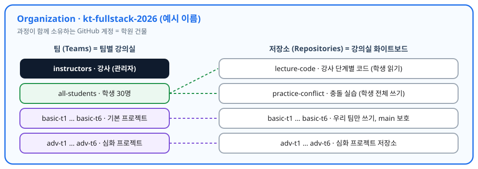

1장. Git과 GitHub로 협업하기
GitHub Organizations — 우리 과정의 팀 저장소
한 줄 요약
Organization은 여러 사람이 함께 소유하는 GitHub 계정입니다. 이 과정의 강사 코드, 실습 저장소, 6개 팀의 프로젝트 저장소가 모두 과정 Organization 안에 있습니다.
1. 개인 계정과 Organization
Organization이란? 여러 GitHub 계정과 저장소를 한곳에 묶어, 권한과 규칙을 함께 관리하는 단체 계정입니다.
| 구분 | 개인 계정 | Organization |
|---|---|---|
| 주인 | 나 한 사람 | 과정(강사가 관리) |
| 사람 묶음 | 없음 | 팀(Team) 단위로 묶는다 |
| 권한 | 저장소마다 한 명씩 초대 | 팀에 권한을 주면 팀원 모두 적용 |

팀은 Organization 멤버를 묶은 그룹이고, 팀 단위로 저장소에 읽기·쓰기·관리 권한을 줍니다. (GitHub Docs — About teams)
2. 초대 수락하기
- 강사가 Organization에 초대하면 GitHub 가입 이메일로 초대 메일이 옵니다.
- 메일의 Join 버튼을 누르거나, GitHub 오른쪽 위 알림에서 초대를 수락합니다.
- 수락하면 Organization 화면의 People에 내 아이디가 보이고, Teams에서 내 팀이 보입니다.
3. 저장소별로 할 수 있는 일
| 저장소 | 내가 할 수 있는 일 |
|---|---|
lecture-code |
읽기(clone, fetch)만. 강사 단계별 코드가 태그로 들어 있다 (12절) |
practice-conflict |
쓰기. 충돌 실습용 (8절) |
우리 팀 저장소 (예: basic-t3) |
쓰기. 단, main에는 PR로만 합칠 수 있다 |
| 다른 팀 저장소 | 읽기만. 다른 팀 코드를 보며 배울 수 있다 |
4. main이 보호되어 있다는 것
팀 저장소의 main에는 아래 규칙이 걸려 있습니다.
main에 직접push금지 → 반드시 PR로 합친다.- PR은 팀원 1명 이상 승인해야 합칠 수 있다.
main강제 푸시(--force)와 삭제 금지.
이런 규칙(브랜치 보호 규칙 또는 rulesets)은 GitHub Free에서는 공개(Public) 저장소에서만 쓸 수 있고, 비공개(Private) 저장소에서 쓰려면 GitHub Team 요금제가 필요합니다. 그래서 이 과정의 팀 저장소는 모두 공개(Public)로 만듭니다. 강사가 저장소를 공개로 만들고 규칙을 걸어 둡니다. 포트폴리오로 보여 주기에도 좋습니다. (GitHub Docs — About protected branches, About rulesets)
공개 저장소이므로 비밀번호·토큰·.env 파일은 절대 올리지 않습니다. 올린 순간 누구나 볼 수 있습니다(11절).
규칙을 어기고 main에 바로 push하면 아래처럼 거절됩니다.
실행 결과 (예시. GitHub 쪽 문구는 조금 다를 수 있습니다)
remote: error: GH013: Repository rule violations found for refs/heads/main.
remote: - Changes must be made through a pull request.
! [remote rejected] main -> main (push declined due to repository rule violations)
이 거절은 실수로부터 팀을 지키는 안전장치입니다. 거절되면 당황하지 말고 브랜치를 만들어 다시 올립니다.
$ git switch -c feature/13-signup
$ git push -u origin feature/13-signup
main에서 이미 커밋을 찍어 버렸어도 괜찮습니다. 위 두 줄이면 그 커밋이 새 브랜치에 그대로 실려 올라갑니다. 그 뒤 PR을 만듭니다.
5. 팀 프로젝트 첫날 순서
$ git clone https://github.com/<조직이름>/basic-t3.git
$ cd basic-t3
$ git switch -c feature/1-project-setup
# 작업
$ git add .
$ git commit -m "chore: 프로젝트 초기 설정"
$ git push -u origin feature/1-project-setup
이후 GitHub에서 PR → 팀원 승인 → 머지. 다른 팀원은 git switch main → git pull로 받습니다.
| 할 일 | 어디서 |
|---|---|
| 할 일 하나를 Issue로 만들기 | 팀 저장소 Issues |
| 할 일 보드(칸반)로 진행 상황 보기 | Organization Projects |
| 코드 리뷰와 승인 | PR Files changed 탭 |
핵심 정리
- Organization = 과정이 함께 소유하는 계정, 팀 = 권한을 받는 사람 묶음.
- 우리 팀 저장소는 쓰기, 다른 팀은 읽기만.
- 팀 저장소는 공개(Public)다. 그래야 무료로
main을 보호할 수 있고, 그래서 비밀번호·토큰·.env는 절대 올리지 않는다. main은 보호되어 있다. PR + 팀원 1명 승인으로만 합친다.mainpush가 거절되면 브랜치를 만들어 다시 올린다.